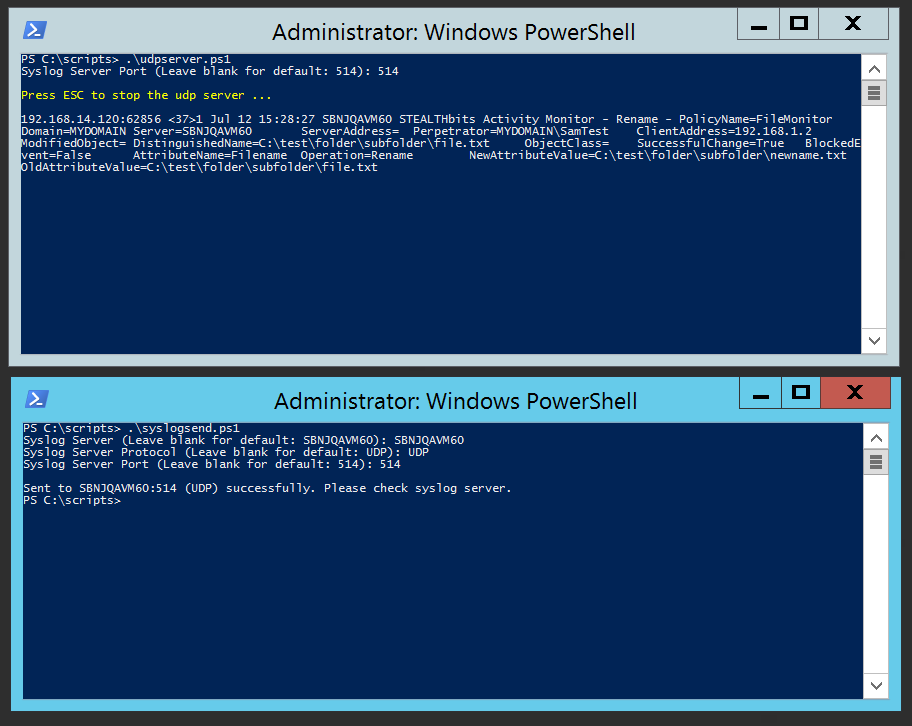

Summary: Syslog Server Troubleshooting Scripts
Issue: Sometimes customers have issues with their syslog servers that is unrelated to SB product issues. Sometimes customers syslog server issues are environmental. This takes our SB products out of the picture to troubleshoot syslog issues.
Instructions: I'm including 2 powershell scripts that will help troubleshoot syslog server issues...
-
udpserver.ps1
- This script creates a local UDP syslog server via powershell. After this is ran, it waits for messages, and displays messages in powershell console. Can then try to send syslog message to this server, or can also use next script to send syslog message. ESC stops the server script. FYI script will fail if port is in use (by another syslog server or something like this).
-
syslogsend.ps1
- This script sends a test message to a specified syslog server and port. Can specify server, protocol (TCP or UDP), and port. Keep in mind previous script only creates a UDP syslog server and not a TCP syslog server.
Creating udp syslog server...
Sending message from syslogsend.ps1...

Channel: Internal
Submitted by: Kevin Duddy
Product: Not specific to a product. This takes our products out of the picture to troubleshoot syslog server issues.
Affected Versions: n/a
Affected Module: n/a
Dev Ticket: n/a
Resolved In Version: n/a
KB Type: How To